Paper
The paper can be found here. We also provide supplementary material at this address.
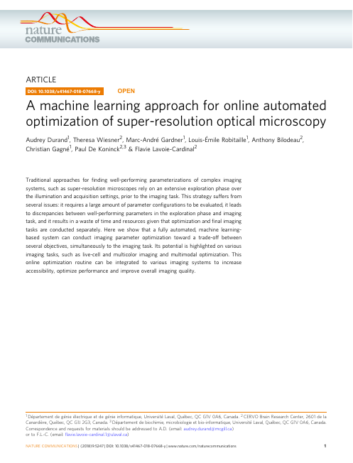 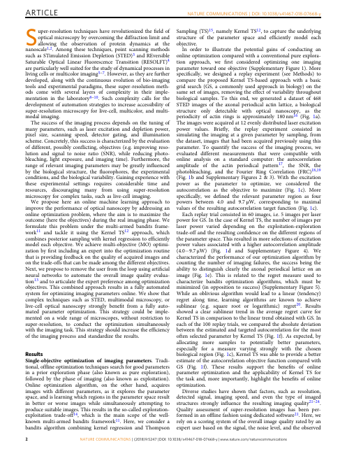 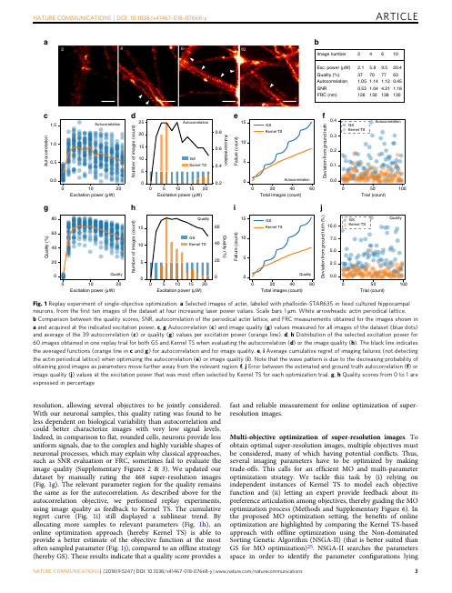 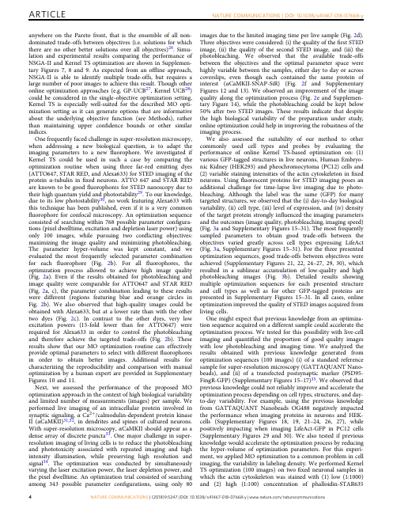 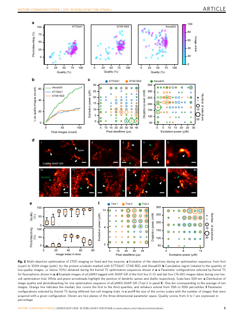 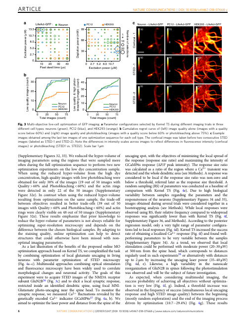 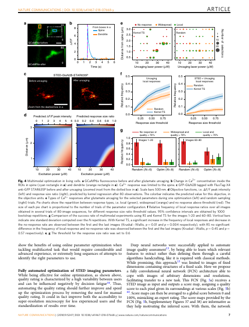 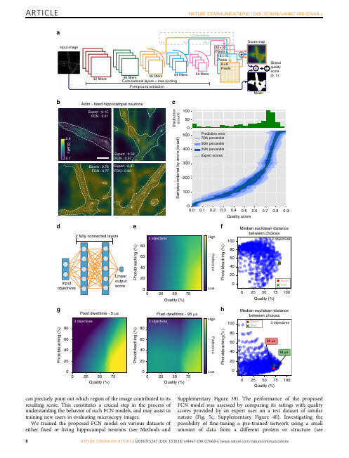 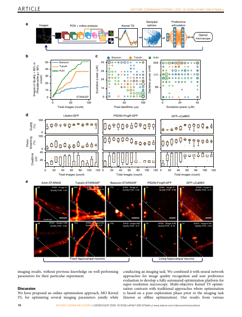
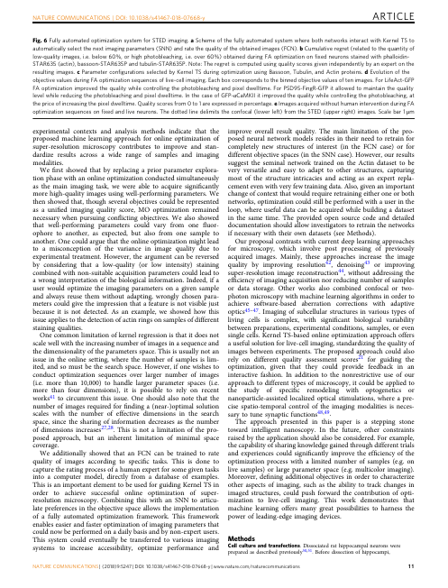
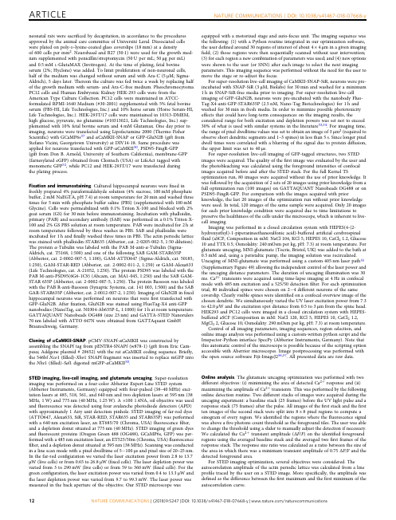
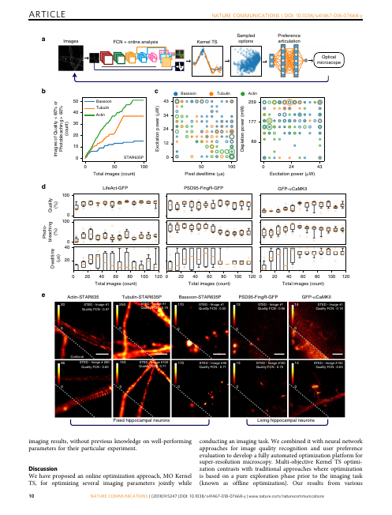
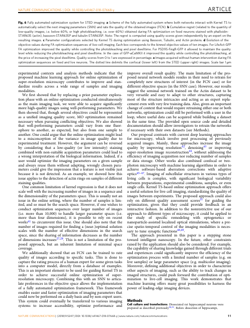
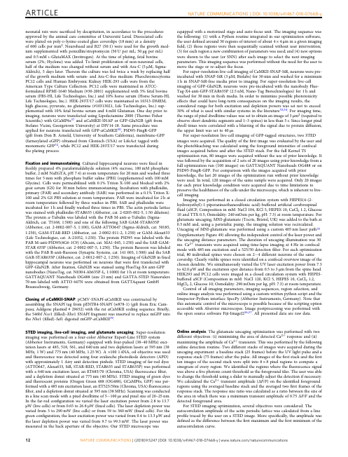
Datasets
The datasets used to train the neural networks can be downloaded here.
- Actin (2669 images)
- Tubulin (525 images)
- PSD95 (494 images)
- αCaMKII (757 images)
- LifeAct (577 images)
- Widefield (400 images)
Note that these images are saved as Numpy arrays, in order to be ready to use with our codebase. Please contact us if you would like original TIFF images.
These datasets are available for general use by academic or non-profit, or government-sponsored researchers. This license does not grant the right to use this dataset or any derivation of it for commercial activities. For more information, please contact us.